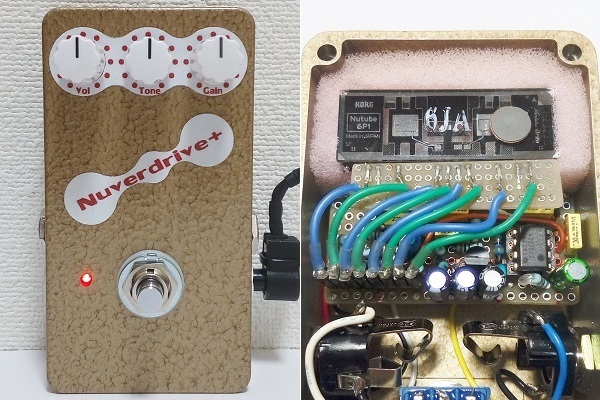
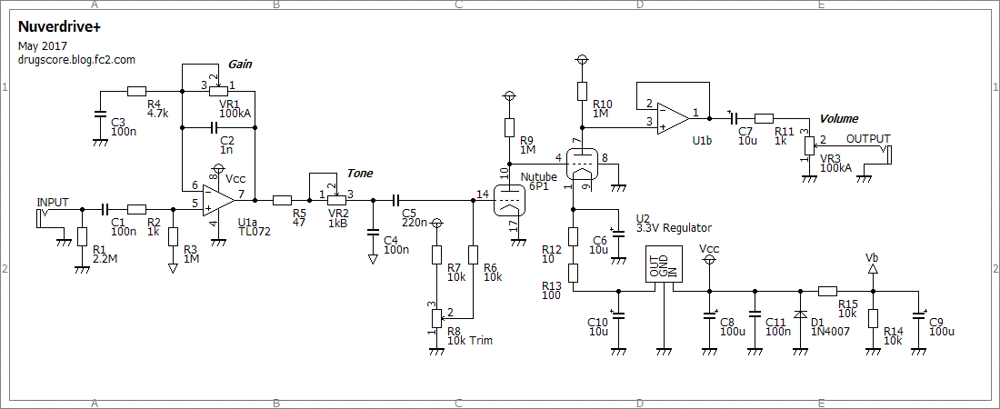
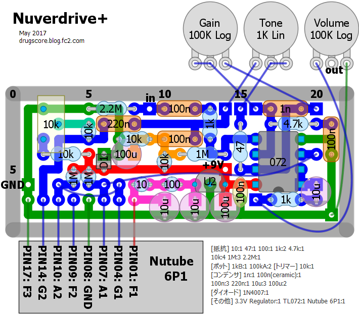
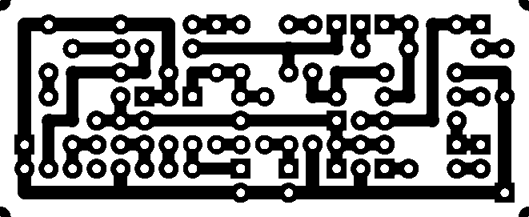

Nuverdrive+
2017年05月07日 カテゴリー：自作エフェクター（アナログ）

「Nutubeで作る自作エフェクター・コンテスト」で佳作を受賞したNuverdriveですが、フットスイッチを押したときのマイクロフォニックノイズが大きかったため作り直しました。もともとNuverdriveを小さいサイズにしたのはコンテスト審査でインパクトを与えるためだったので、今回の「プラス」バージョンが本来の姿といえます。
▽回路図

変更点は以下の通りです。
＜トーン追加＞
この形のトーン回路（ただのローパスフィルタ）はCカーブのポットがよさそうです。ただちょうどいい値（2kCカーブ）が手に入りにくそうなので、1kBカーブにしました。可変幅は少ない感じです。
歪みエフェクターなので、細かな調整は必要ないと考えました。Nutubeの個体差によってはほんの少しゲインが下がるかもしれません。
＜オペアンプ＞
高音質な印象を与えるためOPA2134を使っていましたが、TL072でも全然問題ありません。
＜3.3Vレギュレータ追加＞
フィラメントにかかる電圧が安定するため、電池駆動が可能になりました。何Vまで低下しても大丈夫なのかはテストしていません。
▽レイアウト

▽PCB（横55.9mm縦22.9mm）

マイクロフォニックノイズはまだ少しだけ出ている状態ですが、演奏中切り替えても特に気にならないレベルになりました。以下のような対策をしていますが、HAMMOND 1590Bサイズではこれが限界だろうと思います。
＜シリコンワイヤー＞
Nutube使用ガイドで柔らかい線材が推奨されていたため、シリコンワイヤーという線材を試しました。茹でたスパゲッティのような感触です。
＜適度なスポンジ＞
ぎゅうぎゅうにスポンジを詰めると振動がNutubeに伝わりやすくなる気がするため、ほんのり位置を固定する程度に詰めています。
＜フジソクのスイッチ＞
見た目は頼りない感じで、本来は足踏み用ではなさそうです。スイッチを押したときの感覚がかなりソフトになります。ただし、荒っぽく踏んだ場合は他のフットスイッチとあまり変わらないかなと思います。
トーン約半分の位置でNuverdriveと同じになります。Nuverdriveの音は下記イベント・レポートの動画で聴くことができます。
・KORG / Nutube BUILDER SUMMITイベント・レポート
---以下2017年5月14日追記---
Nutubeを別の個体に差し替えたところ、変な歪み方になりました。たまたま今まで使っていた個体が大丈夫だっただけで、バイアス調整トリマーは必要なようです。回路図・レイアウト・PCB画像を修正しました。